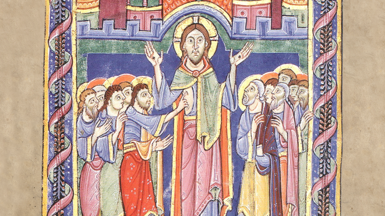

Eu quisera, Senhor, receber-Vos com aquela pureza, humildade e devoção
com que Vos recebeu a Vossa Santíssima Mãe, com o espírito e o fervor
dos santos.
Alma de Cristo, santificai-me.
Corpo de Cristo, salvai-me.
Sangue de Cristo, inebriai-me.
Água do lado de Cristo, lavai-me
Paixão de Cristo, confortai-me.
Ó bom Jesus, ouvi-me.
Dentro das Vossas chagas, escondei-me.
Não permitais que eu me separe de Vós.
Do espírito maligno defendei-me.
Na hora da minha morte, chamai-me.
Mandai-me ir para Vós,
Para que com os Vossos Santos Vos louve
Pelos séculos dos séculos.
Amém.
Ó Sagrada Família de Nazaré,
testemunha da bondade misericordiosa do Senhor,
abençoai todas as famílias do mundo.
Suscitai santos desejos no coração das crianças e dos jovens.
Imprimi um espírito de pureza e respeito mútuo na alma dos namorados.
Conservai os esposos no amor fiel e generoso.
Desenvolvei o sentido de uma vida fecunda nos idosos e enfermos.
Fazei que todas as famílias cristãs sejam sinais eloquentes do amor de
Deus pelos homens,
pequenas igrejas domésticas, onde a graça possa produzir abundantes frutos de
santidade.
Amém.
Ó Meu Deus, eu creio em vós, mas fortificai a minha fé;
espero em vós, mas tornai mais confiante a minha esperança;
eu vos amo, mas afervorai o meu amor;
arrependo-me de ter pecado, mas aumentai o meu arrependimento.
Eu vos adoro como primeiro princípio,
eu vos desejo como fim último;
eu vos louvo como benfeitor perpétuo,
eu vos invoco como benévolo defensor.
Que vossa sabedoria me dirija,
vossa justiça me contenha,
vossa clemência me console,
vosso poder me proteja.
Meu Deus, eu vos ofereço
meus pensamentos, para que só pense em vós;
minhas palavras, para que só fale em vós;
minhas ações, para que sejam do vosso agrado;
meus sofrimentos, para que sejam por vosso amor.
Quero o que quiserdes,
porque o quereis,
como o quereis,
e enquanto o quereis.
Senhor, eu vos peço:
iluminai minha inteligência,
inflamai minha vontade,
purificai meu coração
e santificai minha alma.
Dai-me chorar os pecados passados,
repelir as tentações futuras,
corrigir as más inclinações
e praticar as virtudes do meu estado.
Concedei-me, ó Deus de bondade,
ardente amor por vós e aversão por meus defeitos,
zelo pelo próximo e desapego do mundo.
Que eu me esforce para obedecer aos meus superiores,
auxiliar os que dependem de mim,
dedicar-me aos amigos e perdoar os inimigos.
Que eu vença a sensualidade pela austeridade,
a avareza pela generosidade,
a cólera pela mansidão
e a tibieza pelo fervor.
Tornai-me prudente nas decisões,
corajoso nos perigos,
paciente nas adversidades
e humilde na prosperidade.
Fazei, Senhor, que eu seja atento na oração,
sóbrio nos alimentos,
diligente no trabalho
e firme nas resoluções.
Que eu procure possuir
pureza de coração e modéstia de costumes,
um procedimento exemplar e uma vida reta.
Que eu me aplique sempre em vencer a natureza,
colaborar com a graça,
guardar os mandamentos
e merecer a salvação.
Aprenda de vós como é pequeno o que é da terra,
como é grande o que é divino,
breve o que é desta vida
e duradouro o que é eterno.
Dai-me preparar-me para a morte,
temer o dia do juízo,
fugir do inferno
e alcançar o paraíso.
Por Cristo, nosso Senhor. Amém
